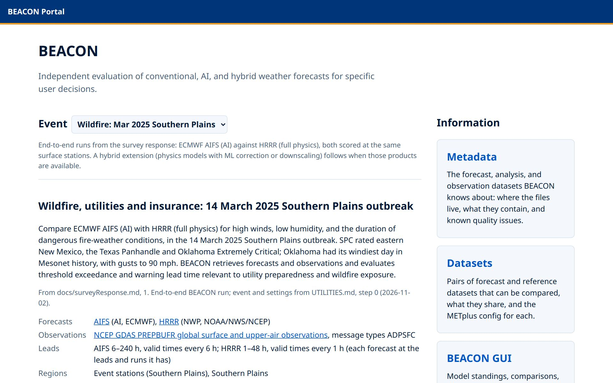

Or use the ← → keys.
Guided tour · 25 steps
The public BEACON portal and GUI, one feature at a time, following the 14 March 2025 Southern Plains fire-weather outbreak.
Or use the ← → keys.

Screenshots of this site, taken 11 November 2026 in a 1280-pixel-wide window. The live site may have changed since. Step 9 shows a local run of the container version, not the public site.